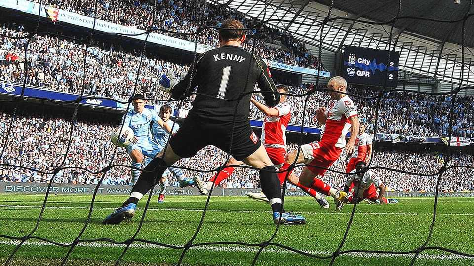

Manchester City, found guilty of cheating, stares into the abyss
The Premier League’s punishment for the club will define English football for decades

Oct 1st 2026
If you haven’t seen Sergio Aguero’s 94th-minute league-winning goal for Manchester City in 2012, Google it. It is among the greatest moments in football history. This week it became infamous.
An independent commission has found City, the most successful English team of the past 15 years, guilty of over 100 breaches of the Premier League’s rules between 2009 and 2018. It is by far the most complicated legal case in the history of English football—and the most consequential.
In football, the relationship between money and success is fairly linear. Most of the charges against City relate to attempts to circumvent rules which prevent owners from pumping vast sums into their clubs, by limiting what teams can spend relative to their revenue. According to the verdict published on September 29th, City’s Emirati owners evaded those rules with “sham” sponsorship contracts that helped the club overstate its income by more than £830m ($1.2bn), money that enabled it to buy players, like Mr Aguero, who made a mediocre outfit record-breaking. In the decade to 2020 the club recorded £600m more in commercial income than the average of Arsenal, Chelsea and Liverpool.
City’s chief executive, Ferran Soriano, has branded those claims a “conspiracy theory”. Few believe him. The independent commission has accused the club’s key witnesses of giving it information “that they knew to be untrue”.
The club, which claims to have “a comprehensive body of irrefutable evidence” proving its innocence, has until October 2nd to lodge an appeal. A separate panel then has 12 weeks to consider it. But if the verdict stands the most significant decision will be on sanctions, which the Premier League says it will tackle in a further hearing. At stake is whether the Premier League comes out of the saga having lost its integrity, or reaffirmed it.
Rival fans are out for blood. On call-in radio shows they demand that City be stripped of its titles, expelled from the Premier League and handed nine years of points deductions to atone for nine years of financial doping. The league has recently handed out four- and six-point deductions for single breaches of its financial rules. The scale of City’s alleged cheating means serious punishment is the only way for the league, one of Britain’s biggest global brands, to save its reputation.
The true doomsday scenario for City is that other clubs come looking for compensation. In July Burnley successfully sued Everton, which had been found guilty of a single breach of the Premier League’s financial rules, for more than £30m of lost earnings. Its argument was that Everton had cheated to employ the players who kept it from relegation, and sent Burnley down. With that precedent set, some clubs have been rumoured to be lining up similar cases against City. The difference is that, whereas Everton was competing at the bottom of the league, City tends to compete at the top, where the financial rewards are far greater. Potentially City could soon have several clubs suing it to the tune of hundreds of millions of pounds.
That would not only be bad for City. The business model of the Premier League depends on being attractive to foreign investment. Costly lawsuits, not to mention financial regulations which limit your capacity to invest, are anything but. Financial fair-play laws were introduced to stop dodgy owners loading clubs with unsustainable levels of debt. They increasingly serve to prevent the owners of midsized clubs from investing the money their teams need to compete at the top. The Premier League is right to uphold its rules. Whether those rules are worth having is another matter.
Amid the mess, spare a thought for City fans, beneficiaries-turned-victims of their club’s purported finagling. Many followed the team through years of pain, enduring grim trips to places like Grimsby and suffering in the shadow of more glamorous Manchester United, before seeing their team crowned European champions in Istanbul in 2023. Supporting a football club is an act of faith. Theirs seemed to have been rewarded—until an independent commission branded their god a sham. ■